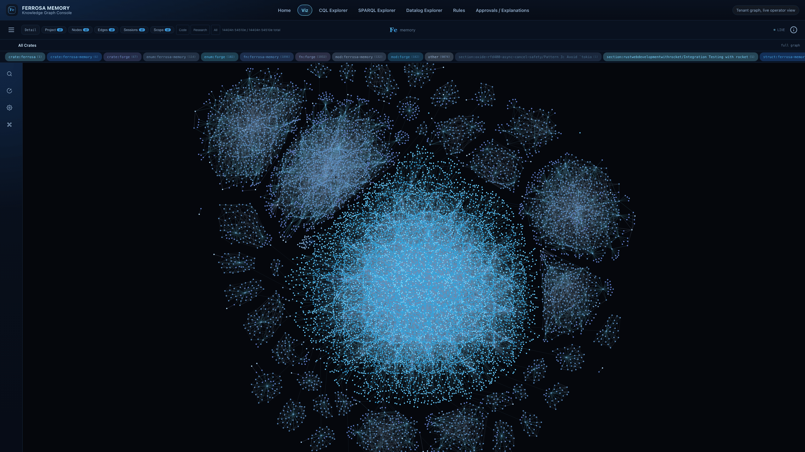
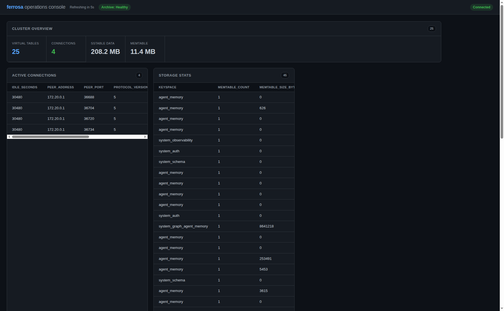

Ferrosa Memory gives agents a developer-preview memory layer: context segments, documents, entities, temporal facts, graph edges, hybrid retrieval, feedback-aware reranking, Datalog-style derived facts, and operator UIs for query, judge configuration, and visualization.
Record what changed over time instead of overwriting history. Current facts stay easy to retrieve, while superseded facts remain inspectable for audit and debugging.
Entities, folds, facts, skills, and tags are connected with typed edges so an agent can follow relationships rather than only search text.
Hybrid retrieval uses lexical, vector, phonetic, graph, workspace, and recency signals, then can expand around raw context or document chunks to recover neighboring evidence.
Rules can derive and explain higher-level facts from graph state, making memory behavior easier to inspect than opaque summaries alone.
Documents, sections, chunks, and adjacency links can be stored as typed memory so answers that span neighboring chunks can be traversed instead of relying on a single ranked hit.
Hybrid search can gather candidates from exact/document IDs, BM25, semantic vectors, phonetic matches, workspace boosts, graph neighbors, and recent session context before fusion.
BRIGHT-Pro-style queries can generate task-native subqueries and merge candidate pools before final ranking, improving the support-doc-closed eval slice.
Agents, users, and optional judge models can send compact item feedback. Abstentions are tracked separately, and future ranking can account for workspace-specific relevance.
Ferrosa Memory exposes an MCP-compatible memory service and an operator workbench. The memory layer owns memory semantics—entities, folds, facts, retrieval outcomes, intentions, skills, Datalog rules, explanations—while Ferrosa Database provides CQL storage, graph traversal, and query surfaces.
The public contract is intentionally small: agents call tools to ingest, retrieve, link, and explain memory. Operators use the workbench and visualization UI to inspect what happened.
Agent / IDE / runtime
│ MCP
▼
Ferrosa Memory service
├─ memory tools + routing
├─ temporal facts + folds
├─ Datalog-derived facts
├─ Workbench query UIs
└─ Viz graph surface
│
▼
Ferrosa Database storage + graphThe browser workbench includes Home, Viz, CQL Explorer, SPARQL Explorer, Datalog Explorer, Judge Config, Aliases, Rules, Approvals, and Explanations.
Use /workbench/api/cql/query, /workbench/api/sparql/query, and /workbench/api/datalog/query while evaluating storage, graph, and derived-memory behavior.
The viz surface is served separately from the main memory API. In local developer preview, it is available at http://localhost:18766/viz.


For the shortest path, run the hosted memory setup script. It downloads the onboarding prompt, optionally clones or updates the public repositories, offers to pull nomic-embed-text-v2-moe, installs Hermes/Claude/Codex hooks when requested, and hands the user to an LLM harness. Minimal native mode can use local filesystem storage with no S3/MinIO; the full Compose mode adds a three-node cluster and MinIO for operator testing.
curl -fsSL https://ferrosadb.com/setup-memory.sh | bash
# Optional semantic/vector search layer:
ollama pull nomic-embed-text-v2-moe
# ferrosa-memory.toml — local preview shape
[server]
transport = "http"
http_port = 18765
[ferrosa]
contact_points = ["127.0.0.1:19042"]
keyspace = "agent_memory"
[viz]
enabled = true
bind = "127.0.0.1:18766"
[retrieval]
default_limit = 10
[embeddings]
provider = "ollama"
model = "nomic-embed-text-v2-moe"
dimensions = 768
[security]
# For local preview only. Use TLS + auth mapping for shared deployment.
require_tls = false# Local URLs
MCP endpoint: http://localhost:18765/mcp
Workbench: http://localhost:18765/
Visualization: http://localhost:18766/viz
Viz snapshot API: http://localhost:18766/viz/snapshotRecord an entity once, then write temporal facts as status changes. Ask for the current fact or inspect the supersession chain.
Ingest raw conversation segments, extract entities, add typed edges, then retrieve adjacent memories by graph traversal.
Use Datalog rules and explanation endpoints to show why a derived memory exists instead of treating memory as uninspectable text.
Use liveness/readiness probes, metrics, query explorers, and the visualization UI to check whether memory is being recorded and linked as expected.
Ferrosa Memory is product engineering, not a paper implementation, but the design is informed by recent and classic work on agent memory, virtual context, retrieval, Datalog-style inference, and memory evaluation.
The local research corpus includes papers on very-long-term conversational memory, episodic memory, cross-domain user memory, and multi-session agent tasks. These motivate temporal facts, context windows, and explicit update history.
Graph-recall and GraphRAG work motivate making links inspectable instead of relying only on vector similarity. Ferrosa Memory borrows these ideas; it is not a direct implementation of any one paper.
LLMLingua-family prompt compression, long-memory benchmarks, and memory-system surveys shape how retrieval, summarization, and memory quality should be evaluated during preview.
Datalog-style derived facts and neuro-symbolic rule-evaluation work inform explainable memory operations. Preview deployments should keep memory tooling local or explicitly protected with TLS, auth, tenant isolation, and operator review.
Start local, inspect memory in the workbench, and use the viz surface to check how context is becoming linked memory.
{kind=link}
{kind=link}